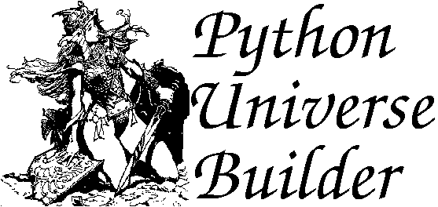

Last Update 2001-03/31 Terry Hancock
[ Introduction ]
[ What's New ]
[ Documentation ]
[ Sample Games ]
[ History ]
[ Future ]
[ Download ]
[ Project Page ]

Introduction
The Python Universe Builder (aka PUB) is a set of Python modules for writing text-based adventure games or interacti
ve fiction.
Features
- sophisticated sentence parser (in some ways, better than Infocom's)
- fully object-oriented
- rich, deep language which is remarkably easy to learn and use
- includes full source code for the system
- may be connected to other services (web, TCP/IP, scripting languages, etc.)
- may be extended in C, C++, FORTRAN, etc.
- runs on almost any platform
- may be used as a multi-player network game (i.e., a MUD)
- free for non-commercial use
Many of these features are simply the features of Python itself, which is one of the best
languages I've ever seen (and definitely the best interpreted language
I've ever seen). In addition, the PUB modules offer some innovative
features not found in other interactive-fiction builders:
- an event-based scheduler which handles timing in a powerful way
- output is directed not just at the player, but at any object which is
listening
- all actors (both the player and NPCs) have equal status and abilities
(though these may, of course, be modified by the game designer)
History of PUB
I discovered PUB quite recently, but it was actually written in
about 1996 by Joseph J. Strout. I was very excited when I found
out about it, because it was exactly what I needed for AutoManga --
an engine and language environment which would work like developing
games in Inform for the Z-Machine, but run under Python, with full
access to the computer's resources. This makes it possible to
interface with the software easily for use with the
AutoManga Presenter,
and also to extend it with the capabilities
like those in the
Oz Architecture.
Beyond this, I'm still evaluating PUB, but it seems to have a
number of nice features beyond what you usually get in an
interactive fiction system, for example: partial real-time
capabilities and multi-user play (support for MUDs) via
TCP/IP connections. Also, since the player character is
modeled like a non-player character, and because the system
is object-oriented, there is direct support for characters
to pass messages to each other and to other objects in
the environment, thus supporting the basic hooks needed
for Tok architecture emotional agents to be used.
How should I start?
First, look at some games written with PUB. Depending on your system, you may need to first get and install Python (which is free), or you may be able to get stand-alone executables.
Next, read the documentation, which includes
a simple tutorial. This will lead
you through the process of creating a very simple interactive-fiction
game from scratch.
Then browse the library reference. This shows you all the great object classes that have already been defined, so all you have to do is drop them in your game and give them names and descriptions.
Finally, go back to the games you've played a bit, and examine their code. Now that you've gotten the general idea, you should be able to understand what makes these games do what they do, and you're ready to start designing your own.